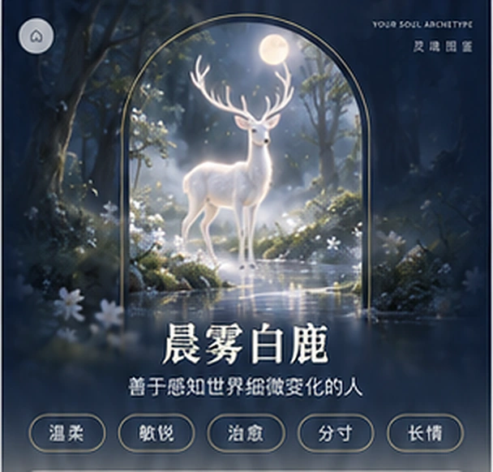

THE FANTASY SOUL ATLAS
✦
奇幻灵兽图鉴
测测藏在你灵魂深处的那只动物

“每一种灵魂，都有属于自己的光。”
无需登录 · 不上传作答数据 · 完整报告已解锁
图鉴馆 · 入馆须知
不要选择“更优秀”的答案
只选择：如果没有人评价你，你真的更可能怎么做。
01
按过去一年作答
不要按理想中的自己，也不要只想某一次极端情况。
02
两个答案都像你时
选择出现频率更高、或者你更自然不用勉强的那个。
03
结果不是诊断
这是基于六条连续人格维度设计的趣味自我探索，不替代专业心理评估。
1 / 36第一幕 · 初见
✧
凭第一反应即可，没有正确答案。
✦
SOUL FREQUENCY ANALYSIS
正在解析你的灵魂轨迹
把36个选择还原成六条稳定倾向……
✓行为倾向归一化
·人格轮廓比对
·伴生灵兽匹配
·生成专属图鉴
12%
YOUR SOUL ARCHETYPE
24种灵兽中，与你共鸣最强的是
图鉴共鸣度--
回答一致度--
身份档案1 / 7